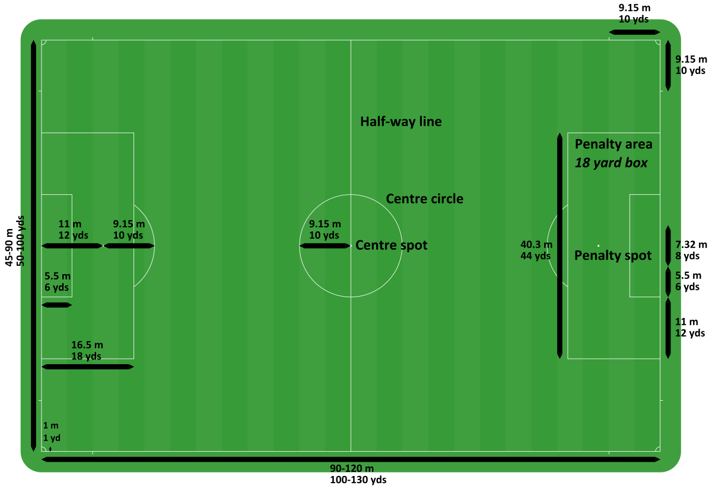

Football is a team sport that is played outdoors. Football originated in Brazil and gradually became popular across the globe. This sport requires complete physical fitness and athleticism to play. The sport is played between two teams of 11 players each.
Objective
Football is played outdoors on a ground. The objective of the game is that a team should score more goals than the opponent team. It is all about attempting to score more goals, while restricting the score and dismissing the goalkeeper of the opponent team. Further in the document, one can closely understand the game, its popular terms and rules.
Team Size
In cricket, each playing side has 11 players and one of them is appointed as captain. Apart from these 11 players, there are a few more players on each side who can only field as substitute for an injured team member. The fielding team should have 11 players and the opposition can send only two batsmen on the ground at the time of play.
A 15-member squad is a must for all international tournaments conducted by the cricket’s governing body, International Cricket Council (ICC).
Football Field Dimensions
The sport is played on presumably a rectabgular leveled ground with goal post at the other ends.THe standard football field is 53 1/3 yards or 160 feet, wide.The primary difference between the two sets of hash marks.

Countries participating in World Cup
The FIFA World Cup, often simply called the World Cup, is an international association football competition contested by the senior men's national teams of the members of Fédération Internationale de Football Association (FIFA), the sport's global governing body. The championship has been awarded every four years since the inaugural tournament in 1930, except in 1942 and 1946 when it was not held because of the Second World War. The current champion is Germany, which won its fourth title at the 2014 tournament in Brazil.
Dimensions of Football Equipment
A football, soccer ball, or association football ball is the ball used in the sport of association football. The name of the ball varies according to whether the sport is called "football", "soccer", or "association football". The ball's spherical shape, as well as its size, weight, and material composition, are specified by Law 2 of the Laws of the Game maintained by the International Football Association Board. Additional, more stringent, standards are specified by FIFA and subordinate governing bodies for the balls used in the competitions they sanction.
Early footballs began as animal bladders or stomachs that would easily fall apart if kicked too much. Improvements became possible in the 19th century with the introduction of rubber and discoveries of vulcanisation by Charles Goodyear. The modern 32-panel ball design was developed in 1962 by Eigil Nielsen, and technological research continues today to develop footballs with improved performance. The 32-panel ball design was soon overcome by 24-panel balls as well as 42-panel balls, both of which improved performance compared to before, in 2007
Scoring
Manual and electronic scoring is done during the match to avoid any errors.
The scoring is done on cumulative basis. All the goals scored,are added to team’s total.